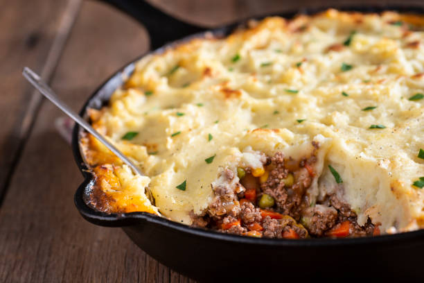

Chicken parmesan Sloppy Joes

Description:
Chicken Parmesan Sloppy Joes are a quick and easy dinner made with a few common ingredients. Ground chicken gets mixed with pasta sauce and cheese then served on buns.
Ingredients:
- 1 Tablespoon olive oil
- 1/2 cup diced yellow onion
- 1 lb. ground chicken I used ground chicken breast
- 1/4 teaspoon salt
- 1/4 teaspoon ground black pepper
- 1 1/2 cups pasta sauce
- 1/4 cup grated parmesan cheese
- 6 hamburger buns
- 1 cup shredded mozzarella cheese
Steps:
- Add the oil to a large skillet and place it over medium-high heat.
- Add the onion. Stir. Cook for 5 minutes.
- Add the chicken. Break it apart with a wooden spoon. Add the salt and pepper. Cook, stirring occasionally, for 6-8 minutes, until the chicken is no longer pink.
- Add the pasta sauce. Stir until well mixed. Reduce the heat so the sauce is gently simmering. Simmer for 10 minutes, stirring occasionally.
- Serve the chicken spooned on hamburger buns and topped with mozzarella cheese.